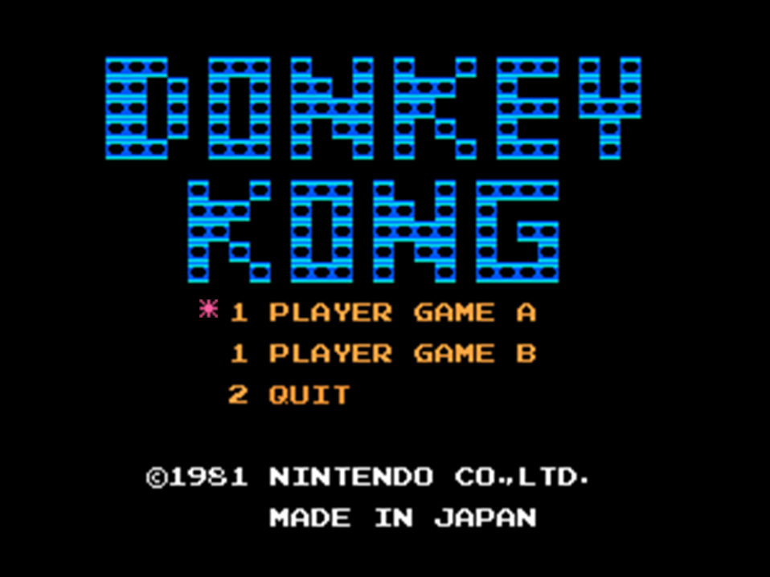

My Work
Custom Game ProjectFor my final exam in MI 231, I was tasked with creating a game from scratch. The option was given to work in a pair and I took this opportunity to build upon my time management and communications skills within a team. My team also utilized a burn down chart to organize each task and assign each piece of the game to a particular person. This allowed us to see how much progress we had made on the game and how far we still needed to go to complete our game before the deadline.

Brickout
This project was created as part of an in-class prototype based on the game Brickout. While creating this game, I attempted to add something to the original game with a new scoring system and art from the Unity Asset Store. The game was simple to create overall and shows that even an easy game to code can be enjoyable to both create and play.